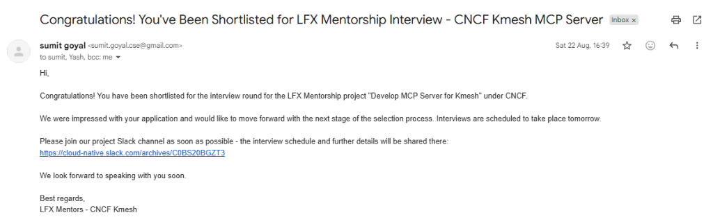

> EXECUTE_WORK_VIEW ⚡
// SYSTEM_STATUS
STATUS: NOMINAL
UPTIME: 74:12:05
LIVE_TIME: --:--:--
DATE: -- --- --
LOCATION: ASIA/DELHI
// Architecture proposal selected and shortlisted for the interview round by CNCF Kmesh maintainers out of a global applicant pool.
Authored an end-to-end 23-page systems proposal implementing the Model Context Protocol (MCP) in Go to enable AI agents (Claude Code, Cursor) to inspect and manage Kmesh's kernel-native eBPF data plane and Waypoint proxies in plain English.

From: Sumit Goyal (LFX Mentor · CNCF Kmesh)
Status: Shortlisted for Interview Round
Program: LFX Mentorship · 2026 Term 3
Project: Develop MCP Server for Kmesh under Cloud Native Computing Foundation
// Full-stack technical interview platform featuring a real-time polyglot code execution sandbox, Python AST Big-O complexity analysis, bi-directional WebSocket voice copilot, and automated ATS application workflows.
// Air-gapped, sovereign multi-agent industrial diagnostics & SCADA telemetry workbench custom-engineered for Mangalore Refinery (MRPL / MoPNG). Zero WAN egress, ≤4.8GB VRAM constraint, DuckDB OLAP engine, and ReAct supervisor agents.
// Distributed backend heartbeat daemon and uptime monitor built with Bun and Hono to prevent cloud server cold starts with sub-minute ping pulses (30s/60s), Redis job scheduling, and automated downtime alert dispatch.
// Full-stack WYSIWYG Markdown editor and README Studio converting rich-text into clean GitHub-flavored Markdown in real time, featuring structured AI documentation context routing with Llama 3.3-70B.
// Algorithmic image security tool embedding invisible cryptographic watermarks into PNG pixel channels with checksum-based integrity verification to detect and prevent adversarial payload injection.
// Selected academic and foundational work that shaped problem solving, implementation discipline, and software fundamentals.
AI academic research mentor and paper writing guidance platform built with Python and Streamlit. Implements FINER topic feasibility evaluation, Boolean literature query crafting (IEEE, ACM, PubMed), IMRaD/IEEE outline generation, thesis formulation workshops, and strict academic integrity coaching.
Comprehensive laboratory coursework and practical implementations covering Object-Oriented Programming (OOP) principles, inheritance, polymorphism, interfaces, exception handling, and core data structures in Java.
Foundational computer science coursework covering algorithmic thinking, computational complexity, object-oriented design, test-driven development with pytest, and Python standard libraries.
Multi-page travel agency portal engineered for university web development curriculum, implementing structured semantic HTML5, responsive CSS forms, table layouts, and navigation schemas.
Responsive urban transit mobility platform developed as part of design thinking methodology, demonstrating human-centered UX design, route calculation models, and Node.js service integration.
// Embedded Systems, Robotics, and IoT prototypes from the personal workshop. (Data Logs Below)
Tracks live latitude, longitude, speed, and direction. Displays live location on a map of India using **NodeMCU and GPS** for emergency monitoring and location alerts.
Safety system that prevents a car from starting if the driver is intoxicated, leveraging an **Arduino microcontroller** and a precise **MQ3 alcohol sensor**.
Monitors temperature, humidity, and soil moisture, waters plants automatically, detects intruders via **PIR sensor**, and sends alerts to mobile.
A versatile remote-controlled vehicle project managed entirely via a mobile phone application utilizing a **Bluetooth communication module**.
A physical security system that grants access with a correct PIN input and automatically locks the door using **Arduino** and a solenoid lock.
Innovative glasses that **vibrate** if the driver's eyes remain closed for more than 10 seconds, serving as a critical alert to prevent drowsy driving accidents.
Regional Ambassador
As an official Community Ambassador, I bridge the gap between complex blockchain tech and the developer community. My mission is to drive adoption, facilitate innovation, and build a robust ecosystem on Hela Labs.
Cloud Native Computing Foundation (CNCF) · Kmesh
23-page systems proposal for "Develop MCP Server for AI-Native Kmesh Service Mesh Management" selected and shortlisted for the interview round by project maintainers.KIET Group of Institutions
2025 - 2029 | Expected Graduation
Academic foundation complemented by ongoing work in backend engineering, systems design, and applied infrastructure.
Bansuri Mahotsav 2022
Awarded for the 'WOMEN SAFETY SYSTEM' project.
Recognized for using IoT, with efficient alert mechanisms and reliable location tracking.
How can a single-threaded architecture of Redis handle millions of operations per second? Deep-dive into event-driven non-blocking I/O multiplexing, memory layouts, and architectural execution trade-offs.
[LOG: REQUESTING CONNECTION] For internships, collaborations, or backend-focused engineering opportunities, reach out directly below.
> SEND_MESSAGE_EMAIL